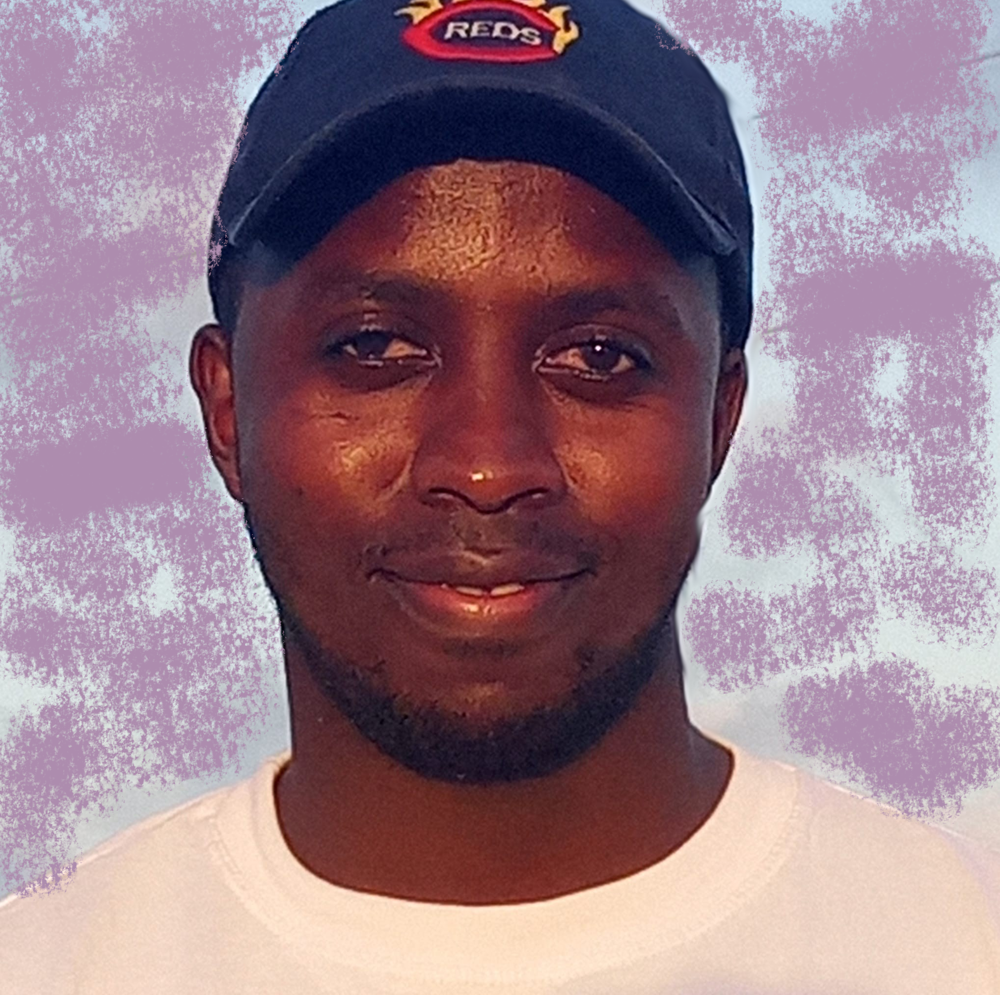

Personal Profile:
Brief Introduction:
Daniel Kurgat" width="300pxs" align="right" />
Hello, I'm Daniel Kipkurui Kurgat, a passionate individual with a background in B.Ed. Science and currently pursuing a Master's in ICT.
Mission Statement:
My mission is to inspire and empower students to navigate the dynamic landscape of Information and Communication Technology.
I am committed to fostering a learning environment that cultivates critical thinking, creativity and digital literacy.
I aim to equip students with the skills necessary to thrive in a rapidly evolving world of technology. My goal is to instill a passion for lifelong learning,
preparing students for not only for current technological challenges but also for the unknown opportunities that lie ahead.
Call to Action:
Explore my profile to learn more about my educational journey, skills, and projects.
2.About Me:
Educational Background:
Bachelor of Education (B.Ed.) in Science from Maasai Mara University.
Currently pursuing a Master's in Information and Communication Technology (ICT) at Pwani University.
Interests:
- Web Development
- Data Science
- Cyber Security
- Advanced Software Development
- Trends In ICT
Achievements:
- Successfully bridging the gap between Education and Technology.
- Implementing innovative teaching using ICT tools
- Contributing to Research that enhances the integration of technology in education
- Developing Educational Softwaretools
3. Skills:
Technical Skills:
- Programming Languages
- Web Development
- Database Management
- Networking
- Operating Systems
- Data Analysis
- Cybersecurity
- Mobile App Development
Soft Skills
Communication, teamwork and leadership.
4. Education:
B.Ed. in Science:
Maasai Mara Universirty
Graduation Year: [2019]
Master's in ICT (Ongoing):
Pwani University
Expected Graduation Year: 2026
5. Projects:
- Waste Management Platform
- Local Business Directory and E-Commerce Platform
- Civic Engagement Platform
6. Experience
- Teaching in
- Nakuru West Secondary School(Science Dept.)
- Mama Ngina Kenyatta High School (Science Dept)
- Marereni Sec. Sch
- ICT Support Intern in Local Security Company
- Research Assistant - ICT in Education Project
8. Contact:
Email: arapyule@gmail.com
LinkedIn: Daniel Kurgat
GitHub: DEXTERKUR
Facebook : Ku Arap Yule
Phone No.0115 278 377
9.Resume/CV:
10. Gallery:
My Pictures